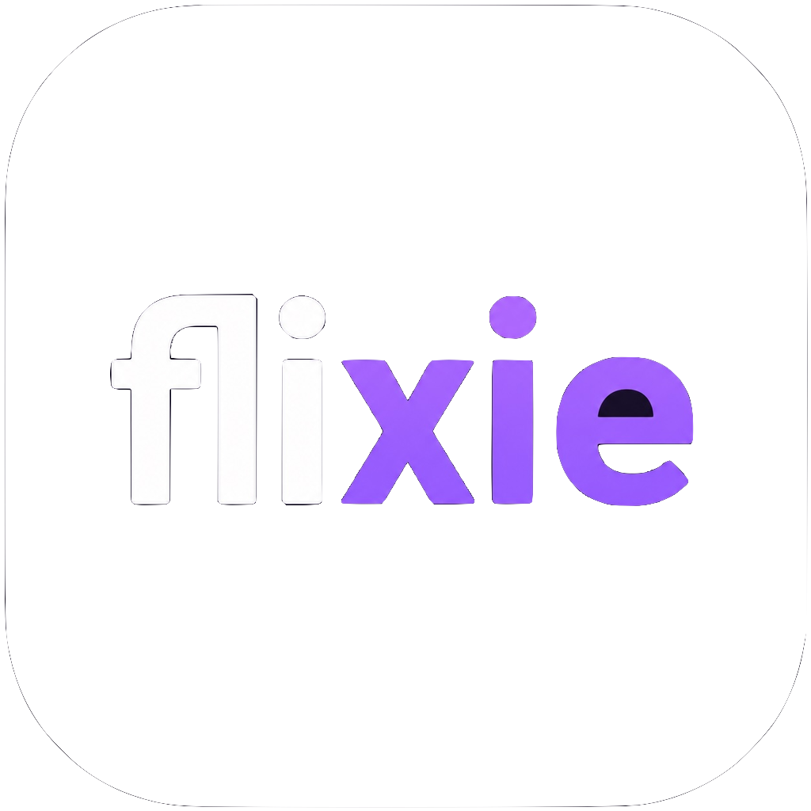
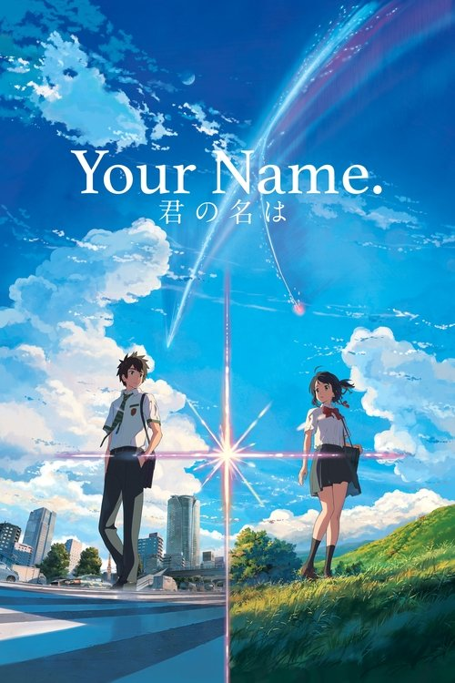

Recommendations · Spoiler-free
My friend has never watched anime. What’s your one-film starting point — and why?
ELEllis · 2h ago

Big feelings. Different worlds. Your kind of people.
Films & series · Opinions from people who joined
Joining includes your existing and future public anime reviews here. Private reviews stay private. Leaving removes your reviews from this community.
Ask for a recommendation. Talk through a film. Find your next rabbit hole.
Recommendations · Spoiler-free
My friend has never watched anime. What’s your one-film starting point — and why?

Spirited Away · Spoiler-free
The little background details are half the magic. Which ones stayed with you?
Attack on Titan · Spoilers through S1 E25
Thread text and replies are hidden until you choose to open them. No later-season spoilers.
Illustrative discussions · Proposed feature
2 hours ago · Public review
Some films make you wish you could watch them for the first time again. This one makes me grateful I can keep coming back.
8.8/10 Anime members · 42 ratings
4 hours ago · Public review
Contains spoilers for the series. The title and review stay hidden until you choose.
I came for the spectacle and stayed for the difficult questions. Still thinking about where everyone ended up.
8.4/10 Anime members · 31 ratings
Yesterday · Public review

Loved the atmosphere and the music. I just didn’t connect with the story as much as I hoped. What made it work for you?
8.1/10 Anime members · 27 ratings
You’re all caught up with this sample feed.
Films rated by members of Anime. Every score shows its sample size.
Start with a film. No season-long commitment.
Read their reviews before deciding to follow. Joining never follows anyone for you.
This is a design proposal, not a live community. All people, reviews, counts and scores above are illustrative; the title artwork is from TMDB. The app’s Manrope typography, purple surfaces, mint accents and personal badge borders are retained.
Try Join, Discuss threads, a local reply, Start a discussion, the tabs, filters, sort, Watchlist and spoiler reveal. The lower app navigation is shown for placement only. Series artwork is intentionally a labelled placeholder.